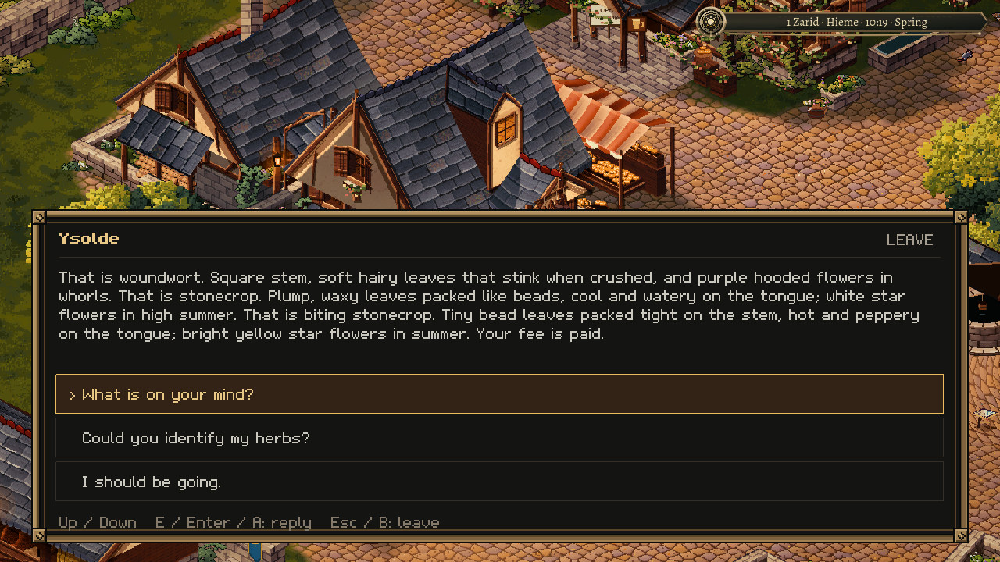
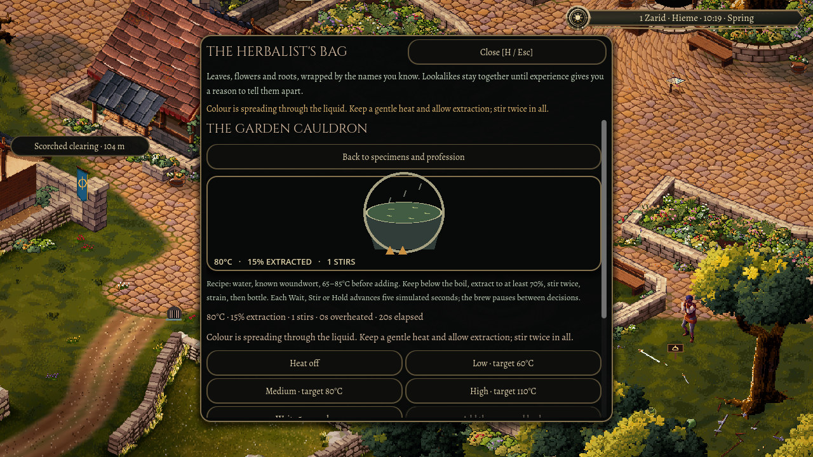
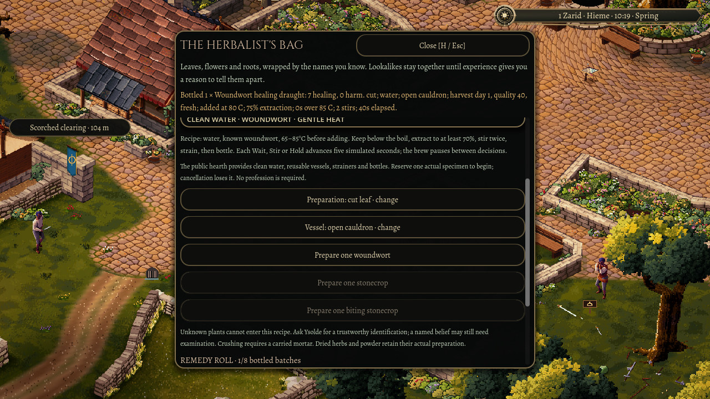
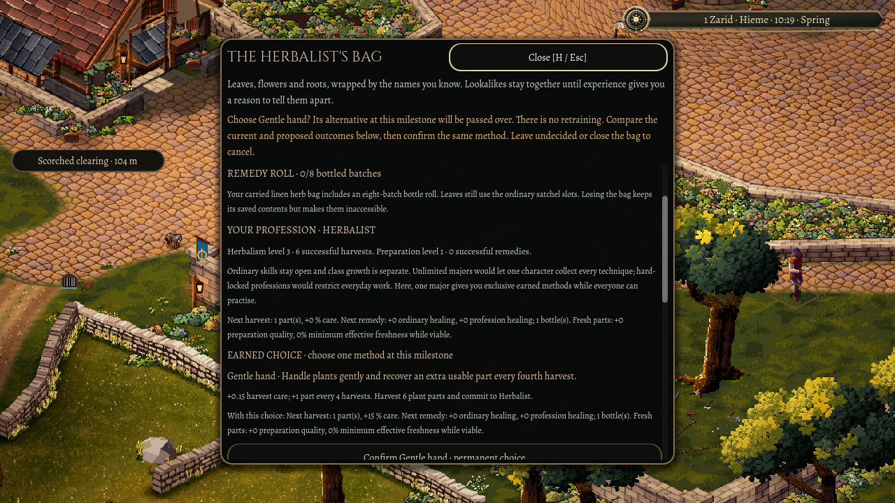
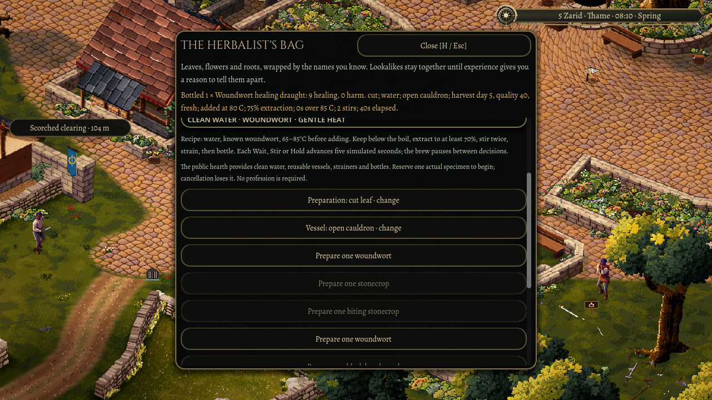
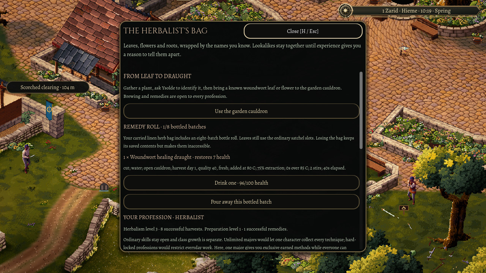

3 November 2026
From leaf to draught
An unfamiliar plant is a small mystery. A carefully made remedy is a reason to carry it home.
Oakwell's herbalism work already gave a gathered plant a place in your bag and a name in your own words. It remembered what you tasted and what a herbalist told you. This review takes the next step: choosing a useful part, preparing it at the cauldron and leaving with a draught you can actually use.
The pictures come from automated input in the actual town. Daylight and the herbalist's work pause are held for the review; the plants, routes, payment and earned practice come from ordinary play controls.
A process you can learn
The first recipe asks for an identified woundwort leaf or flower. A tempting folk name is not enough. You still need to gather the specimen, keep it and learn what it is before turning it into medicine.

At the cauldron, cutting preserves quality while crushing extracts more quickly. The vessel matters too. Warm the solvent, watch for steam, add the prepared herb and give the colour time to spread. Stir gently, strain and bottle.

Those actions leave a history. An early addition, too much stirring or a hard boil can weaken the result. A badly scorched batch can be ruined. Reopening the bag does not give the same ingredients another chance to roll a better outcome.
A bottle keeps the story of its making: the part's condition, how hot the liquid was when it went in, the extraction, the stirring and any scorching. If one batch is weaker than another, there is a cause to find and a decision to try differently next time.

Useful before a title
You do not need a profession to begin. Successful gathering and preparation count while you are still deciding what kind of craftsperson to become. The first useful draught can restore the same health you risk out in the town's dangers.
The permanent choice comes later. One major vocation gives a character a direction, while ordinary skills stay open. After six real harvests, the Herbalist can choose Gentle hand to recover extra usable material, or Field preservation to carry viable fresh ingredients further into preparation. At fifteen, a second choice deepens that method. From stem to salve carries careful handling into stronger remedies; another refinement puts more into the harvest itself.
The choice explains what will change before you confirm it. Reading the alternatives earns nothing, and choosing one passes over the other. The reward is a different way to work with the next real ingredient.

To reach the second choice, the review uses the ordinary dawn-wait menu, lets four actual midnights pass and returns to the regrown plants. Fifteen real harvests earn the refinement. The next recorded draught restores nine health; that same ingredient and brewing history would restore seven without the chosen refinement.

Coming back to your work
The plant, its spent part, the active brew, your practice and the remaining doses belong to one saved character. The review restarts the game with a batch left halfway through, finishes it, then restarts again with the bottled dose still carried.

Drinking that dose restores the four missing health and removes it from the roll. Its full strength is seven, but it only heals what is missing. Trying to use the same dose again grants nothing, and another restart keeps it spent.
That is the shape of a complete profession session: go looking, notice something, learn, prepare and come back with help you made yourself. It gives a quiet day in Oakwell a useful destination.
The review evidence distinguishes automated rule checks and declared native fixtures from an uncoached human session. The wider playtest still needs people to tell us whether these cues are clear and whether the choices feel worth making.